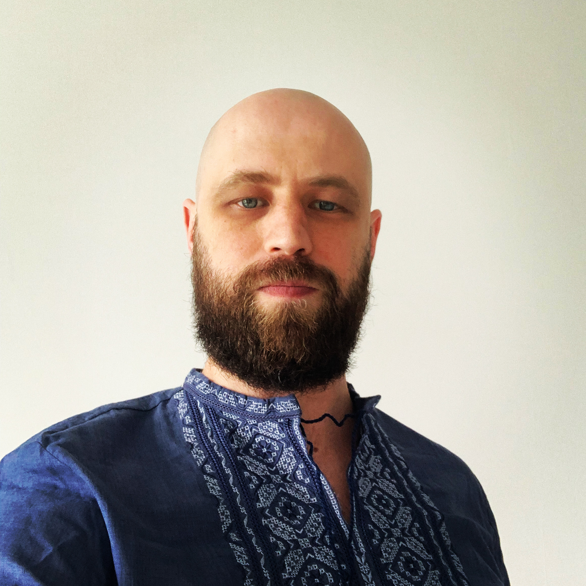
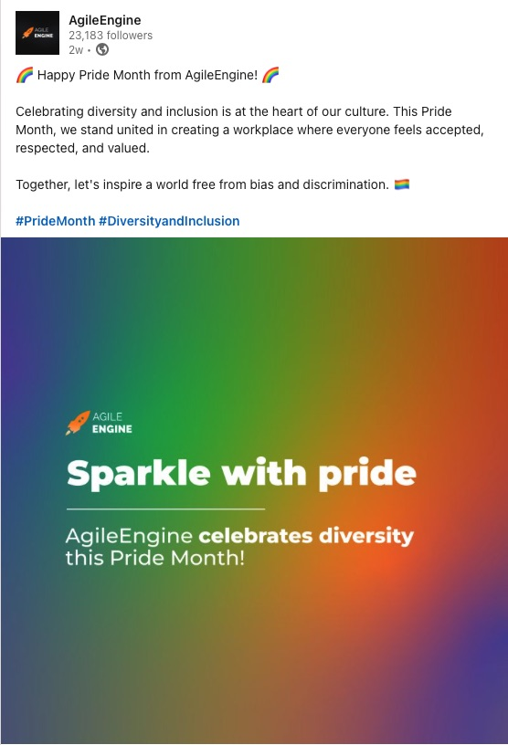

Paul Harmash - CV
Delivery/Project Manager | Scrum Master | Kanban Service Delivery Manager

About
PMI-ACP
PSM II
KMP
KMM/KCP
CAPM
Certified SAFe Agilist
ICAgile Certified Professional (IC)

AgileEngine
Delivery/Project Manager | Scrum Master | Kanban Service Delivery Manager
Portfolio Delivery Manager | Scrum Master
- Leading a team of Delivery Managers responsible for multiple accounts, ensuring their success and keeping clients highly satisfied
- Managing accounts marginality
- Engaging in the pre-sales process, showcasing our company's strengths and suggesting effective approaches for value delivery
- Guiding the inception phase, crafting product visions, user stories, and risk management documents to set the stage for success
- Supporting teams during development, facilitating meetings, ensuring transparency, and delivering value early and consistently
- Motivating and assisting teams in transitioning from formation to high-performing stages
- Communicating with stakeholders, managing expectations, and seeking their valuable feedback
Lead of the Project Review & Consulting Team
- Conducting interviews for potential team members to build a strong and talented workforce
- Mentoring less experienced Project Managers and Delivery Managers, supporting their growth
- Designing and refining the project review process to optimize project performance
- Managing the review team, setting metrics and KPIs to monitor progress effectively
- Organizing workshops and presentations to share insights and knowledge
- Implementing processes and policies for continuous delivery service improvement
Licences and Certifications
Contact Me